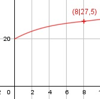

Aufgabe 74 Eine Kostenfunktion 3. Grades hat an der Stelle x = 0 die Steigung 2. An der Stelle x = 8 liegt ihr Wendepunkt. Die fixen Kosten betragen 20 GE. Wie hoch sind die Kosten K im Wendepunkt? x = Mengeneinheiten ME K(x) = Kv(x) + Kf K(x) = ax3 + bx2 + cx + d K'(x) = 3ax2 + 2bx + c K''(x) = 6ax + 2b Bedingungen: K(0) = 20 --> d = 10 K'(0) = 2 --> 2 = 3a * 02 + 2b * 0 + c --> c = 2 K'(8) = 0,4 = 3a * 82 + 2b * 8 + 2 K'(8) = 192a + 16b + 2 = 192a + 16 b + 2 = 0,4 |-2 = 192a + 16b = - 1,6 (1) K''(8) = 0 = 6a * 8 + 2b = 48a + 2b (2) (1) + (2) * (-8) 192a + 16b = -1,6 -384a - 16b = 0 ------------------- -192a = -1,6 |:-192 a = 1/120 a in (2) eingesetzt: 48 * (1/120) + 2b = 0 2/20 + 2b = 0 |-8/20 2b = -8/20 |:2 b = -0,2 K(x) = (1/120)x3 - 0,2x2 + 2x + 20 K(0) = (1/120) * 83 - 0,2 * 82 + 2 * 8 + 20 K(8) = 27,5 GE
